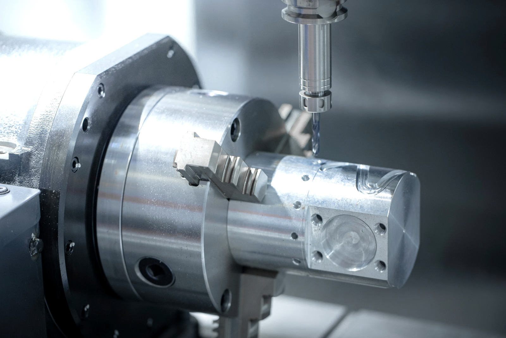
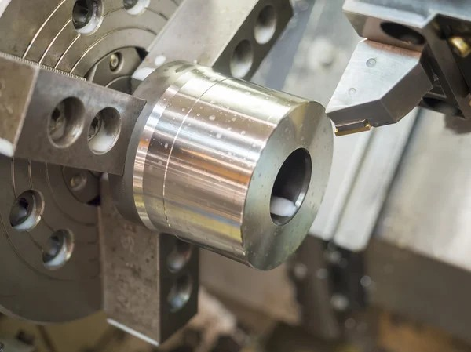

Antiguidade e Idade Média (Pré-história ao século XVI)
• Primórdios: O conceito vem da pré-história, quando o ser humano usava pedras lascadas, ossos, conchas e madeira para criar ferramentas de caça e corte.
• Primeiros tornos: Por volta de 3000 a.C., os egípcios já utilizavam serras, formões e ferramentas rudimentares. Mais tarde, na época do Império Romano e na Idade Média, surgiram os primeiros tornos de arco e tornos de vara, operados manualmente por artesãos para moldar madeira ou metais leves.
• Século XVII: Aparecem as primeiras siderúrgicas de aço e tornos de fuso mais elaborados, usando sistemas de polias e correias.

Século XX
• Em 1906, os tornos ganharam motores elétricos.
• Em 1925, surgiram os tornos elétricos aprimorados.
• Nos anos 1940 e 1950, John T. Parsons e o MIT desenvolveram o Controle Numérico (CN) usando fitas de papel perfuradas para a indústria aeroespacial.
• Em 1960, os tornos tornaram-se automáticos.
• Em 1978, a tecnologia evoluiu para o Controle Numérico Computadorizado (CNC), revolucionando a precisão e a velocidade da fabricação em massa